Developing a shopping calculator to help newcomers in Canada acclimate to an unfamiliar pricing structure
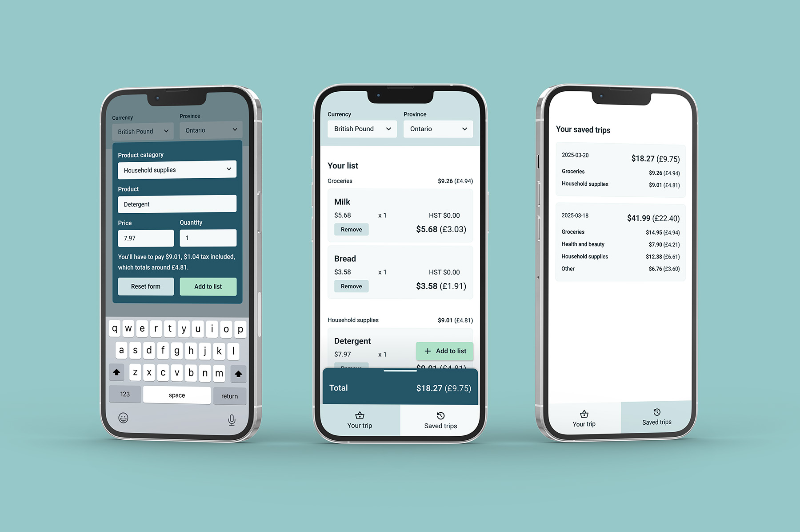
Overview
The differences in currencies and tax systems hinder newcomers' ability to efficiently manage their finances when shopping in Canada for the first time. This project aims to address this challenge and offer a more convenient shopping experience for visitors and new residents by converting prices from Canadian dollars to a currency familiar to the user, while calculating the total cost of their shopping trip and helping them keep track of their spending.
Tools
Pen and paper, Adobe XD, Figma, HTML, CSS, JavaScript
Timeline
Jan – Apr 2022 (original concept)
December 2024 & March 2025 (redesign)
The challenge
The small financial obstacle for new residents.
When I first came to Canada, the different currency created an unexpected obstacle. I had expected to start using a new currency and adapting to a different pricing structure. 1 Canadian Dollar was roughly 18,000 VND, so I'd mentally convert the prices to VND to determine if something is a reasonable purchase.
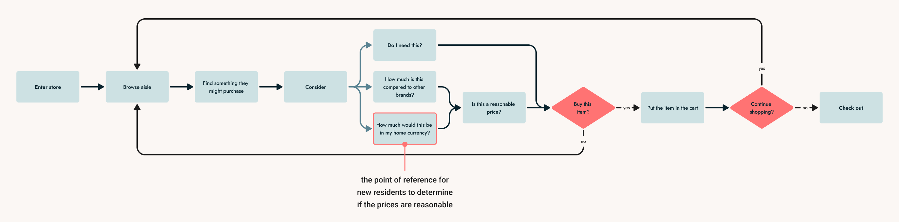
I thought I had a decent system in place, but I still found myself looking at my banking app and wondering how I seemed to be spending more than expected. Vietnam includes value-added tax on price tags, so I didn't realize there was an additional cost not reflected in the prices. I hadn't accounted for the sales tax and small miscalculations to add up so much.
Shoppers tend to judge prices based on their previous experience, but local shoppers are already familiar with the pricing structure. For newcomers, switching between currencies is one way to familiarize themselves with a new and unfamiliar pricing structure. Being able to mentally convert one currency to another is one thing, keeping track of the numbers is another matter. Those who've been familiar with tax-inclusive pricing also have the additional task of figuring out how the sales tax applies.
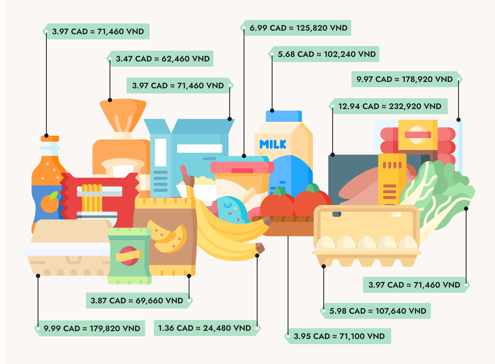
Currency conversion matters more in large transactions. Miscalculations in small-ish purchases are more easily forgivable, but they still add up. Regardless of the scale of the issue, it's still an obstacle that makes newcomers' transition to a new environment more difficult.
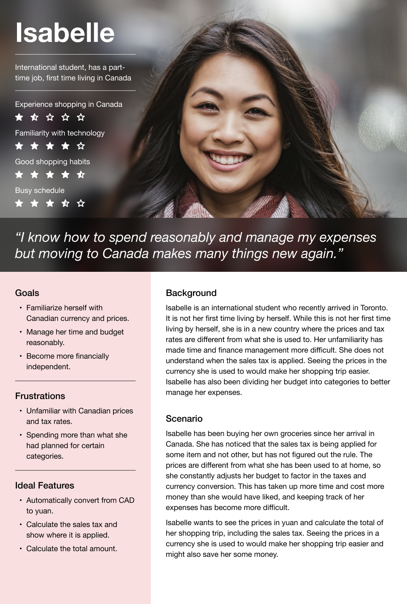
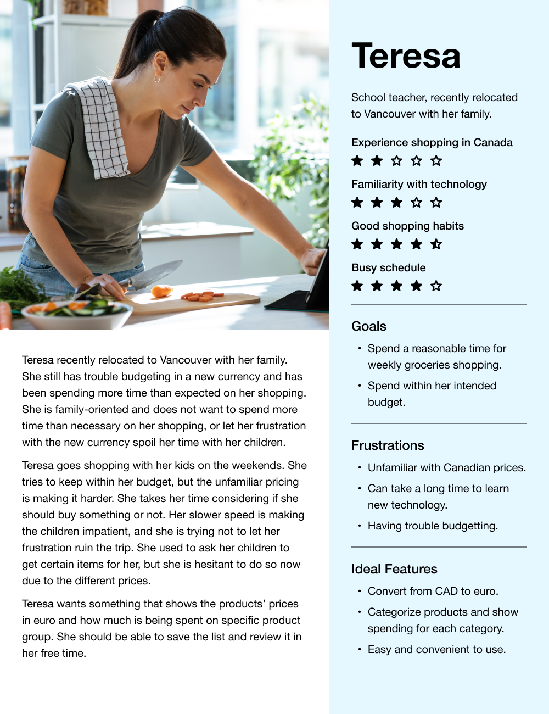
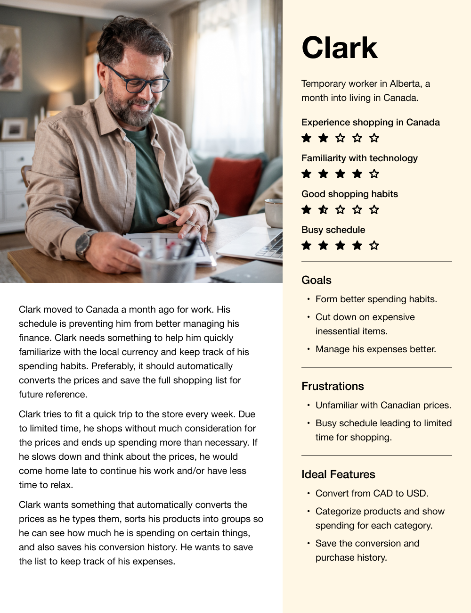
The common advice is to "give it time, and you'll get used to it." People get used to the currency difference eventually as they shop more often, but that transition doesn't have to be difficult or time-consuming. The few extra seconds spent mentally converting prices for a point of reference can add up to the few minutes that could have been spent on homework, hobbies, hangouts, etc. Amidst other challenges that come with relocating, one less source of stress could be valuable.
What if there's something to give people back those extra minutes? Something to make shopping trips faster and easier? Something to help newcomers adapt to the new currency and prices?
Shopping calculators and currency converters exist on their own, but what if they can be combined into one platform to provide a better experience for newcomers?
Design
Based on what I read on online forums and saw in existing shopping calculator apps, I outlined primary features—calculation and conversion—and good-to-haves.
The original idea was simple: the user types in the price and quantity, views the converted price in a familiar currency (with the sales tax accounted for), then adds the item to their list if they decide to buy it. Most people have their phone with them when they go out, so making this a shopping calculator app with integrated currency conversion would provide convenience and utility. Editing, deleting, categorizing, and saving capabilities are good-to-haves, but aren't as necessary.
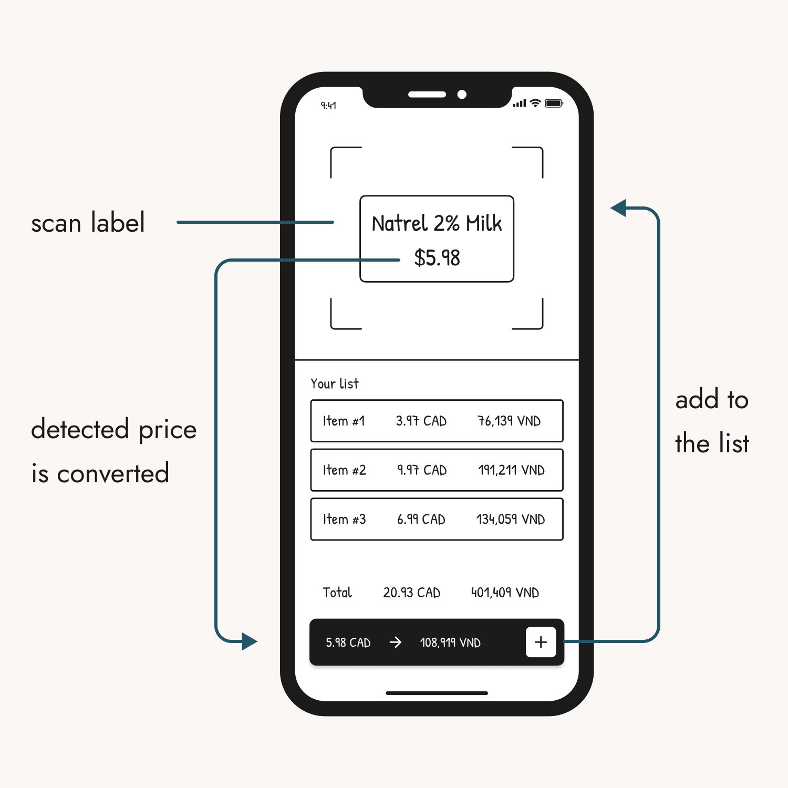
With the feature set decided, I mapped out the user flow.
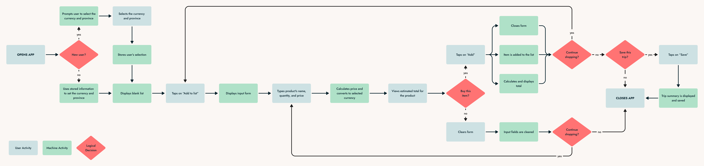
I used paper prototypes to ideate layouts and conduct quick user tests.
My experience with front-end development was limited at this point, so I was advised to keep everything to one HTML document—thus, one screen. A challenge I encountered early on was fitting a lot of information into one phone screen. To address this constraint, most participants recommended displaying the information gradually.
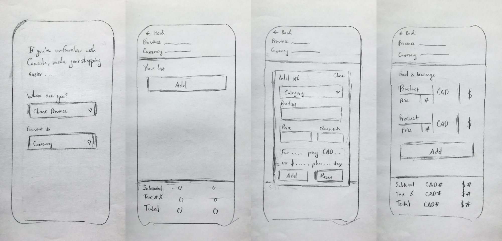
I designed wireframes and continued to refine the design of the app.
From the first to the second iterations, I omitted the initial screens prompting the user to select their currency and province and intended to replace them with a brief instructional pop-up.
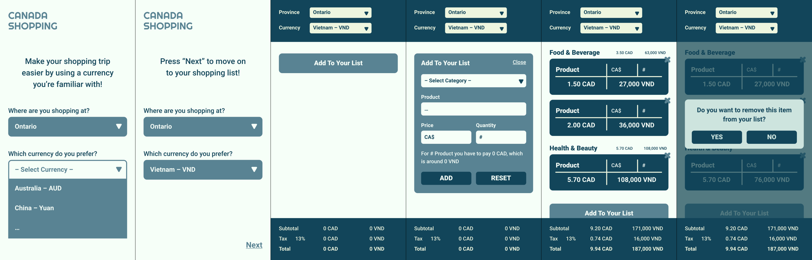
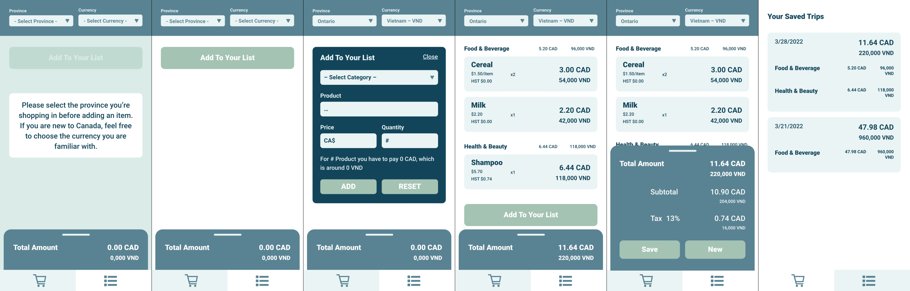
I addressed shortcomings from my initial wireframes to better account for the constraints of mobile devices.
The biggest mistake I made when designing the original wireframes was not taking into account the device restrictions. The screen size used was too small, considering the sizes of most phones at the time. Additionally, I didn't consider the native UI elements or the reachability of certain features.
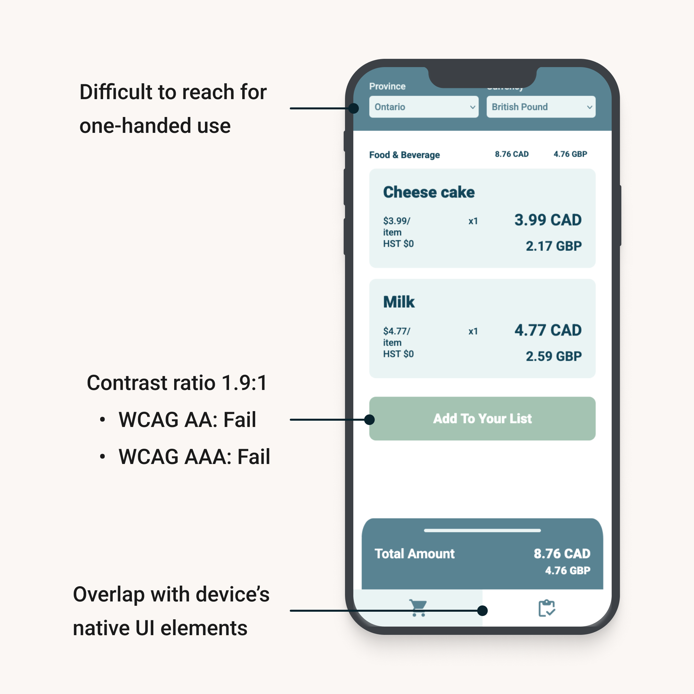
This redesign addressed those shortcomings and applied what I've learned to improve the design:
- I moved the currency and province dropdowns to a modal at the start to draw more attention to them; users wouldn't have to reach the top of the screen when they first use the app.
- The “Add to list” button now floats near the bottom right corner for easier access. It stays visible to users regardless of how long their shopping list can get.
- I reworked the colour palette to improve colour contrast; while the original colours look alright to my eyes, they didn't pass the accessibility check.
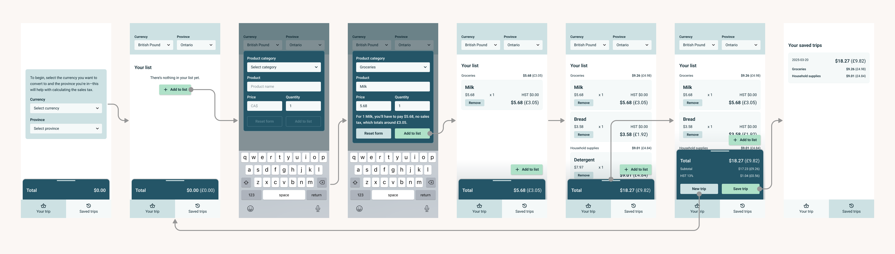
Develop
I coded a prototype with HTML, CSS, and JavaScript, using an API to retrieve real-time conversion rates.
Real-time conversion is crucial—1 CAD was roughly 18,000 VND in 2022, but roughly 19,000 VND in 2025, with a lot of fluctuations in between. I initially used Exchangerates.host API to retrieve the conversion rates. I leveraged local storage to prototype a simple save feature.
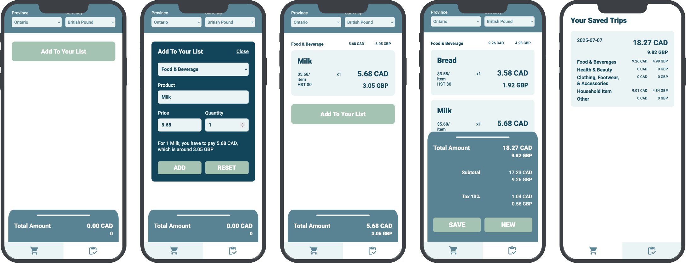
I decided to clean up the initial code and add error handling to improve the user experience.
My first task was replacing the Exchangerates.host API with the Frankfurter API, the latter of which has fewer available currencies but is more reliable for a small and low-maintenance project. It may not be suitable to scale up, but it's sufficient for a proof of concept.
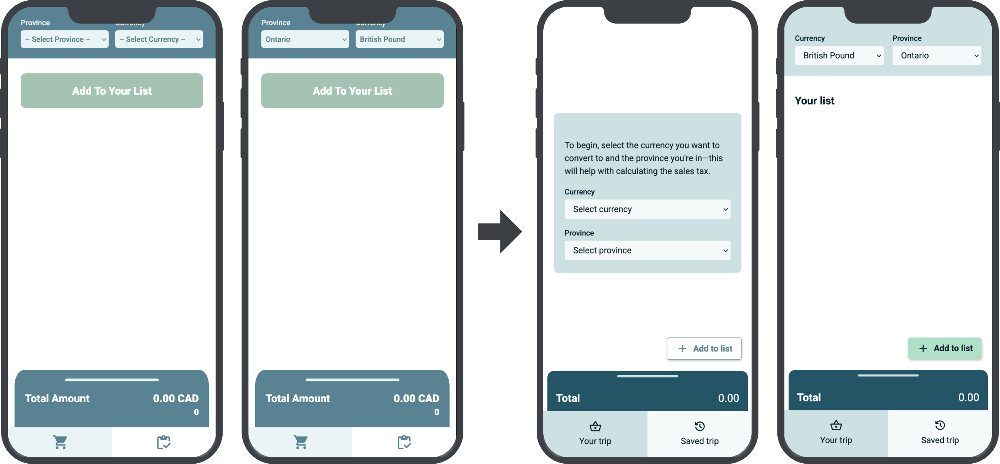
In addition to implementing the onboarding modal to allow users to select their currency and province, I leveraged local storage to save the selected currency and province as planned in the user flow. When the app is used the second time onward, they will have the currency and province pre-selected and can skip the modal entirely.
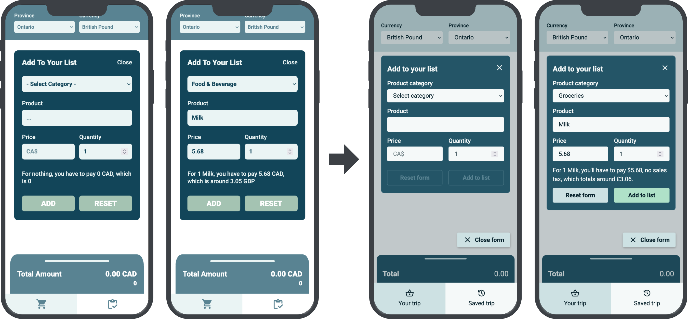
I added a disabled state to the input form, so the user can only tap on the “Add to list” button when they've input all the necessary information. I also added a “Close form” button closer to the bottom of the screen to improve reachability.
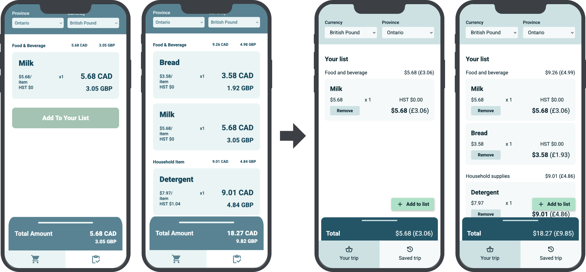
The fixed “Add to list” button means users don't have to scroll down to the bottom of the list to locate the button. I also added a simple delete function to remove items.
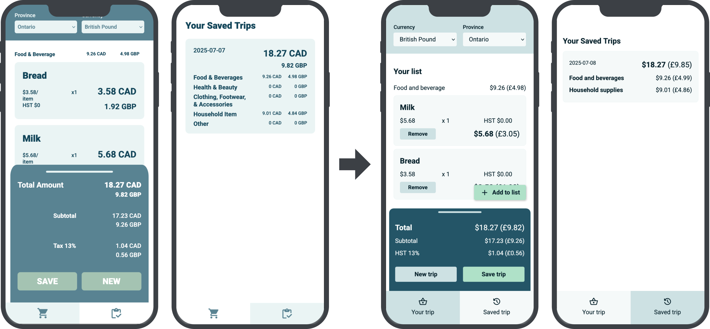
I simplified the layout of the summary area so it takes up less space and reduces confusion. In the “Saved” screen, only categories with information are displayed to remove clutter.
While the original prototype wasn't properly designed for a mobile app, it was better suited for mobile browsers.
Ideally, a mobile app would be more convenient and could leverage the device's hardware and operating system. However, the way that I developed the prototype makes it more suitable for a web app, and native hardware isn't necessary for this proof of concept. The small size of the original wireframes happens to be more suitable for mobile browsers.


With this app, new residents get a point of reference when they're shopping with an unfamiliar currency, learn when sales tax is usually applied, and keep track of their spending during their shopping trip.
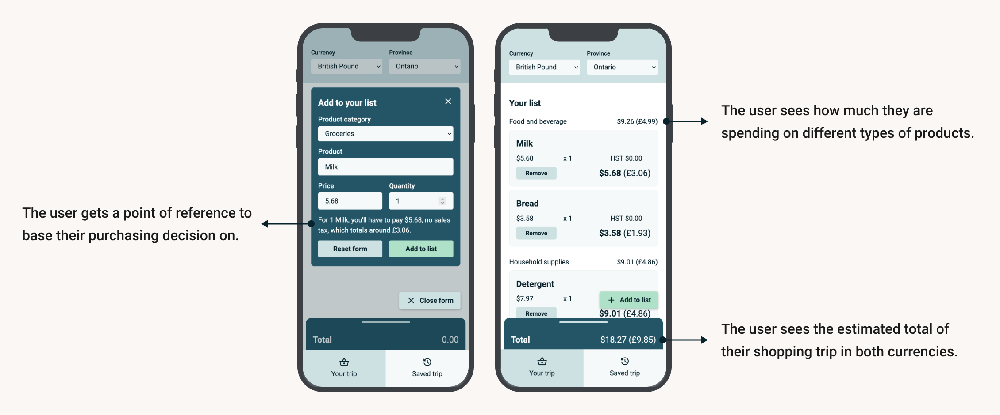
Next steps
Beyond the prototype
There are improvements I could make to the prototype, such as adding geolocation to automatically detect the province the user is in, or a confirmation modal when the user taps on “Remove” on an item. I want to open up the design and research portion of this project to further explore designing for accessibility. What would this app look like for older audiences? What if there's an option to interact with this app in another language?
Typing takes time, how about scanning?
Typing out each item and price manually isn't very convenient and may takes up more time than necessary. However, grocery items are often labelled with their names and prices. Using the phone's camera to scan the labels would speed up the information-inputting process.
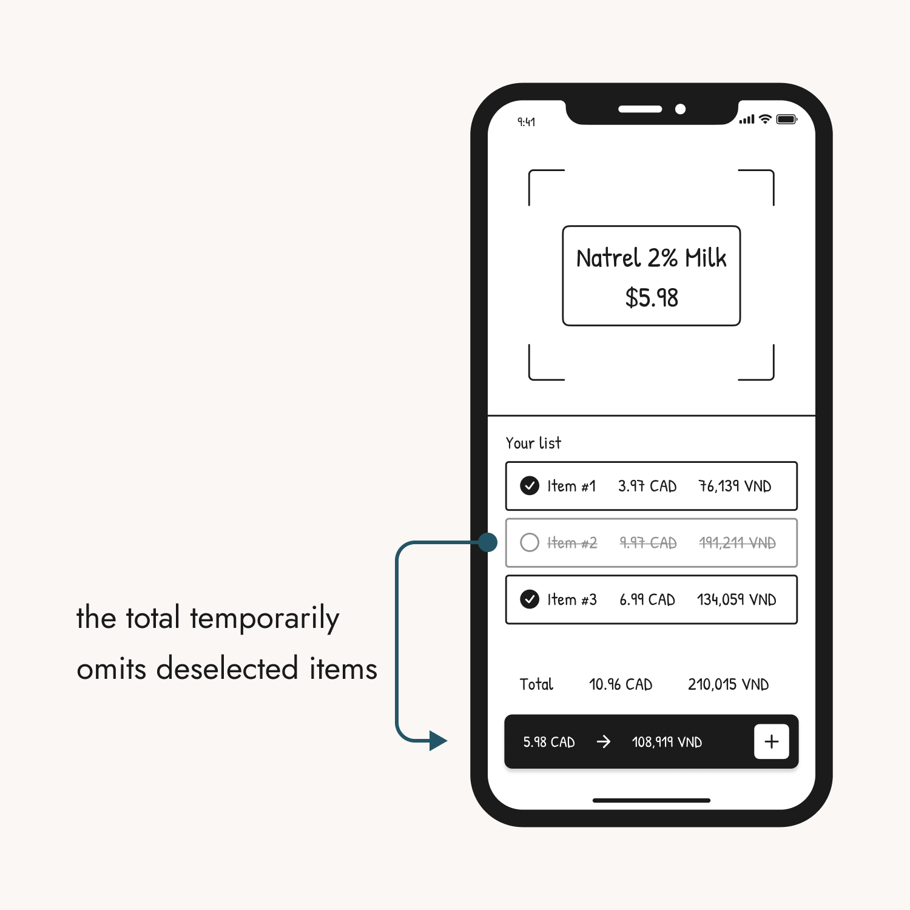
Deselecting instead of removing
Shoppers are often indecisive. Some items go into the cart, then back to the shelf in the next minute, and maybe back into the cart. Allowing the user to deselect items they're still considering would allow them to view how much their total would change and easily add a previously unwanted item back onto their list.
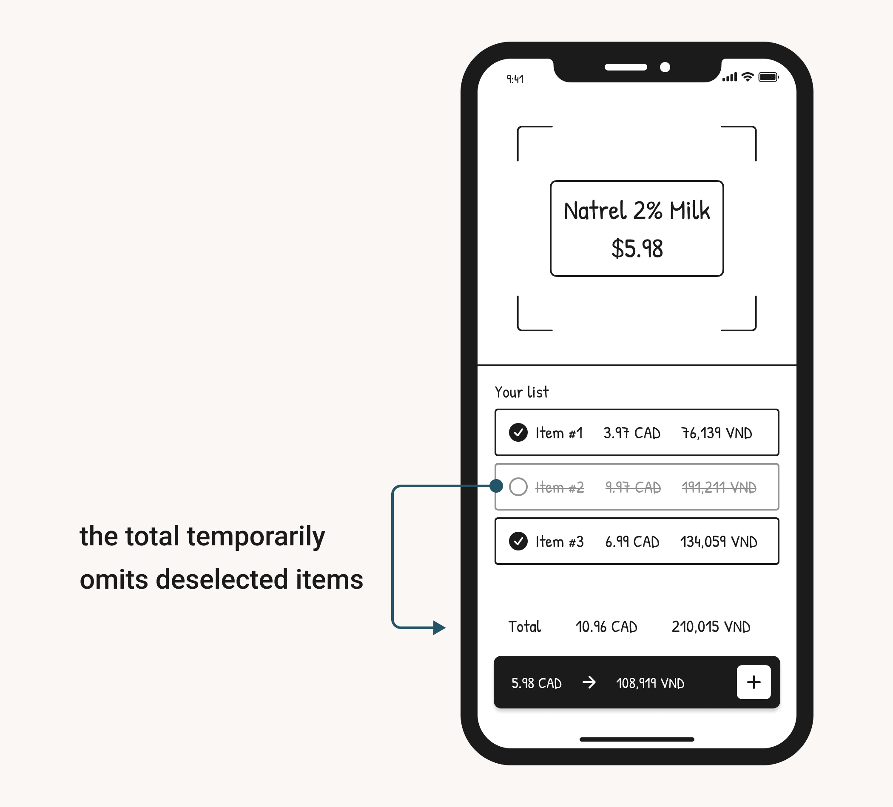
Envisioning a more scalable product
To implement the two features above would require a more complex system that leverages a frontend framework, backend database, and device hardware. With these proposed features added, the user base can expand to shoppers looking for an intuitive shopping calculator. There's also potential to expand this app to other countries, not just limiting it to Canada.
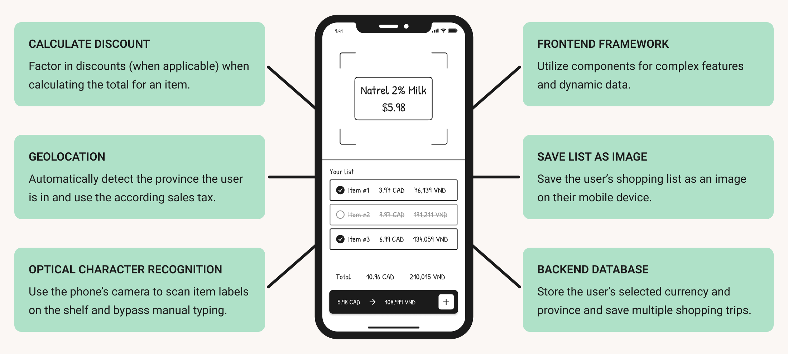
Takeaways
This is one of my favourite projects and I enjoy coming back to it from time to time and improve the wireframes and prototype as my skills improve. However, as I continue to work on this, I realized how often I was considering how some features would actually be developed beyond user flows and wireframes. The consideration was warranted since making a coded prototype was a part of the original school assignment, but once the assignment was over, I was still caught up in and limited by technical constraints. Features that would greatly improve the user experience weren't considered simply because I couldn't code them.
Having a good grasp of the technology and development process is valuable when considering product feasibility. Moving forward, I just can't discard an idea because I personally can't code it. As long as I did the research and design properly—including research into the technology requirements—I can make a comprehensive blueprint for a talented development team to pick up from there. I still want to continue revisiting this concept and improving it, but staying more within the research and design aspects.